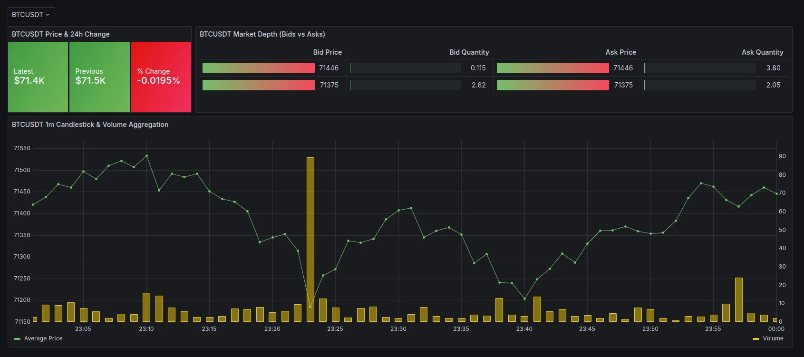

Real-Time Crypto CDC & Streaming Engine [streaming]
Capture every price change across thousands of Binance trading pairs without polling full tables, then prove nothing was lost between source and sink.
115,000+ events reconciled | 3,700+ trading pairs | 30 s micro-batches | 1 min OHLCV windows
+--------------------+ +--------------------+ +--------------------+ | Binance API |---->| Airflow + Postgres |---->| Debezium + Kafka | | 3,700+ pairs | | WAL replication | | 115k+ CDC events | +--------------------+ +--------------------+ +--------------------+ | v +--------------------+ +--------------------+ +--------------------+ | FastAPI + Grafana |<----| Cassandra |<----| Spark Streaming | | live order book | | time-series sink | | 30s micro-batches | +--------------------+ +--------------------+ +--------------------+
[Binance API] 3,700+ pairs | [Airflow + Postgres] WAL replication | [Debezium + Kafka] 115k+ CDC events | [Spark Streaming] 30s micro-batches | [Cassandra] time-series sink | [FastAPI + Grafana] live order book
- Debezium connectors stream changes from PostgreSQL's write-ahead log (WAL) into partitioned Kafka topics.
- Verified completeness from PostgreSQL to Cassandra with replication-slot LSN offsets, Spark checkpointing (
maxOffsetsPerTrigger) and source-to-sink row counts. - PySpark Structured Streaming computes spread and OHLCV windows and serves live order-book depth through FastAPI and Grafana, all in Docker.
